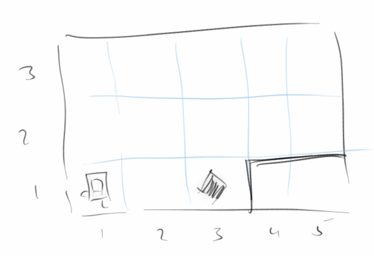
Karel
Karel ist ein kleiner Roboter, der etwas wie ein alter Macintosh aussieht. Auf den folgenden Seiten werden wir viel von Karel lernen. Obwohl es etwas einfach anmutet, lernen wir in diesem Kapitel wahrscheinlich die wichtigste Lektion des ganzen Buches, nämlich komplexe Probleme mit dem Top-Down Ansatz in einfachere zu zerlegen.
Ein kleine Anmerkung für Leute die schon ein bischen programmieren können: man sollte dieses Kapitel auf keinen Fall überspringen! Prinzipiell geht es in diesem Kapitel darum den Top-Down Ansatz an einfachen Beispielen zu erlernen und zu üben, sich einen guten Stil anzugewöhnen, und vor allem zu lernen ohne Variablen zu programmieren.
.
Karel's Welt
Karel's Welt besteht aus Straßen und Alleen. Straßen verlaufen von West nach Ost und Alleen von Süden nach Norden. Außerdem gibt es Wände durch die Karel nicht hindurchgehen kann, und es gibt Bonbons. Karel hat immer eine Tüte mit unendlich vielen Bonbons bei sich, aber es können auch Bonbons an beliebigen Stellen herumliegen.
Karel kennt von haus aus vier Kommandos:
- move(): er kann sich einen Schritt nach vorne bewegen
- turnLeft(): er kann sich nach links drehen
- pickBeeper(): er kann einen Bonbon aufheben
- putBeeper(): er kann einen Bonbon hinlegen
Obwohl das jetzt nicht nach viel aussieht, stellt sich heraus, dass Karel alles ausrechnen kann was es so auszurechnen gibt, man sagt, Karel ist eine 'Universal-Rechenmaschine'.
.
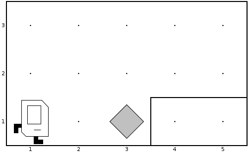Karel lernt Laufen
Wenn wir nun möchten, dass Karel den Bonbon aufheben soll und an die Stelle (5,2) tragen soll, so würden wir ihm sagen:
"Karel geh doch zwei Schritte nach vorne, dann hebe den Bonbon auf, drehe dich nach links, laufe einen Schritt, drehe dich dreimal nach links, laufe noch zwei Schritte und lege den Bonbon hin."
Warum soll sich Karel dreimal nach links drehen? Weil er nicht weiß wie 'nach rechts drehen' geht, das hat ihm noch keiner gezeigt.
Da Karel kein Deutsch versteht, müssen wir ihm das in seiner Sprache sagen und da hört sich das wie folgt an:
move();
move();
pickBeeper();
turnLeft();
move();
turnLeft();
turnLeft();
turnLeft();
move();
move();
putBeeper();
Ähnlich wie niemand wirklich versteht warum man im Deutschen diese komischen Satzzeichen, wie Kommas, Punkte usw. benötigt, weiß auch niemand warum Karel diese runden Klammern und Strichpunkte benötigt. Aber ohne geht's halt nicht. Auch achtet Karel akribisch auf Groß- und Kleinschreibung, wenn man sich vertippt macht er gar nichts.
.
Karel Programm
Damit wir nun Karel bei seiner Arbeit zusehen können, benötigen wir etwas das 'Programm' heißt. Dabei handelt es sich eigentlich um Java, aber das brauchen wir noch nicht zu wissen. Ein Karel Programm sieht wie folgt aus:
import stanford.karel.*;
public class FirstKarel extends Karel {
public void run() {
move();
pickBeeper();
move();
turnLeft();
move();
turnLeft();
turnLeft();
turnLeft();
move();
move();
putBeeper();
}
}
Dabei ist der Teil der für uns wichtig ist blau markiert. In allem was folgt werden wir einfach unsere Karel Kommandos (auch Code genannt) anstelle der blauen Zeilen einfügen.
.
 Übung: GoodMorningKarel
Übung: GoodMorningKarel
Wir wollen jetzt unser nächstes Karel Problem lösen: Karel ist gerade aufgewacht, und will seine MorgenMilch trinken. Allerdings, steht die noch vor der Haustür. Er muss also aufstehen, hinausgehen, die Milch holen, und sich dann an seinen Frühstückstisch setzen, um in Ruhe seine Milch zu trinken. Wie würde das denn in Karel's Sprache aussehen?
.
Karel lernt neue Tricks
Karel ist ein bischen wie ein Haustier, und wir können ihm neue Sachen beibringen. Als erstes wollen wir ihm beibringen, dass er sich auch nach rechts drehen kann. Wir sagen ihm also, jedes mal wenn du das Kommando turnRight() siehst, dann drehe dich doch dreimal nach links. Damit uns Karel versteht müssen wir natürlich das ganze in seiner Sprache formulieren:
public void turnRight() {
turnLeft();
turnLeft();
turnLeft();
}
Jetzt können wir einfach dieses neue Kommando verwenden und Karel versteht was er machen soll. Kommandos nennen wir manchmal auch Methoden, z.B. turnRight() ist eine Methode, aber auch move(). Im Allgemeinen werden Methoden immer durch runden Klammern gekennzeichnet.
Frage: Wie müsste denn der Syntax für eine Kommando turnAround() lauten, das Karel dazu veranlasst in die entgegengesetzte Richtung zu schauen?
.
Übung: GoodMorningKarel
Um zu sehen, dass das auch wirklich funktioniert, wollen wir unseren GoodMorningKarel so modifizieren, dass er anstelle dreier turnLeft()'s ein turnRight() verwendet.
.
Karel wiederholt sich
Es ist sehr häufig, dass Karel etwas immer wieder machen soll. Z.B. soll er sich dreimal nach links drehen oder er soll zwei Schritte laufen. Für so etwas gibt es etwas das heißt Schleife, genauer eine 'for'-Schleife. In Karel's Sprache sieht das dann so aus:
public void turnRight() {
for (int i=0; i<3; i++) {
turnLeft();
}
}
Wichtig ist hier die '3', die sagt Karel, dass er das was in den geschweiften Klammern steht dreimal machen soll. Den Rest brauchen wir vorerst gar nicht zu verstehen. (Die wenigsten Leute tun das, sie kopieren die Zeilen einfach und ändern einfach die '3'.)
.
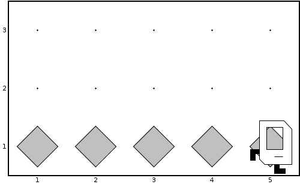Übung: FillRowKarel
Eine andere Anwendung für unsere Schleife ist FillRowKarel. Wir möchten, dass Karel fünf Bonbons in einer Reihe hinlegt. Das scheint eigentlich ein ganz einfaches Problem zu sein, und man würde denken, dass die folgenden Zeilen
for (int i = 0; i < 5; i++) {
putBeeper();
move();
}
das Problem lösen sollten.
.
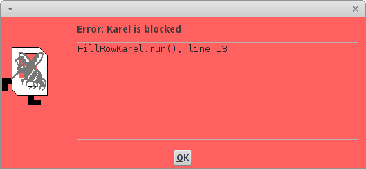Allerdings stellen wir fest, dass Karel am Ende gegen die Wand rennt und sich weh tut. Im Program sehen wir das wenn das rote Fenster hochpoppt in dem Karel von einer Wespe gestochen wird. Um dies zu vermeiden, könnten wir die Schleife nur viermal durchlaufen. Aber dann würde Karel nur vier Bonbons hinlegen und nicht fünf. Dieses Problem tritt so häufig auf, dass es einen eigenen Namen hat: man nennt es das O-Bob Problem.
.
OBOB
O-Bob war ein Meister der Jedi dem dieses Problem als erstes aufgefallen ist, als er versuchte seinen Droiden zu programmieren. Im Ernst, eigentlich steht OBOB für 'off by one bug', also in etwa 'um eins daneben', meistens eins zu wenig. In unserem FillRowKarel Problem bedeutet dies, dass Karel am Ende einfach noch einen Extra-Bonbon hinlegen muss.
for (int i = 0; i < 4; i++) {
putBeeper();
move();
}
putBeeper();
Momentan müssen wir damit leben. Im nächsten Kapitel werden wir sehen wie man mit Hilfe des 'Loop-and-a-half' das O-Bob Problem elegant umgehen kann.
.
Karel hat Sensoren
Eine Kleinigkeit haben wir bisher noch verschwiegen, denn Karel hat nämlich Sensoren. Z.B. kann er feststellen, ob an der Stelle an der er sich gerade befindet ein Bonbon liegt. Falls da einer liegen sollte, könnte er diesen aufheben. Dieses 'falls' heißt in Karel's Sprache if, und der Syntax der in dazu veranlassen würde einen Bonbon aufzuheben, wenn an der Stelle an der er gerade steht einer liegt, sieht wie folgt aus:
if ( beepersPresent() ) {
pickBeeper();
}
Es gibt ne ganze Menge Sensoren, und wir listen hier mal die wichtigsten auf:
- beepersPresent(): es befindet sich ein Bonbon an der Stelle an der sich Karel gerade befindet
- noBeepersPresent(): es ist kein Bonbon an der Stelle
- frontIsClear(): es ist keine Wand vor Karel, Karel kann also unbesorgt vorwärts laufen
- frontIsBlocked(): es ist eine Wand vor Karel, also sollte Karel nicht versuchen vorwärts zu laufen, sonst haut er sich den Kopf an
Zusätzlich gibt es noch die Sensoren rightIsClear() und leftIsClear(), sowie die jeweiligen geblockten Varianten. Rechts bedeutet eigentlich unten, und links bedeutet eigentlich oben, immer relativ zur Richtung in der Karel gerade schaut.
.
Karel, mach mal
Sehr häufig möchten wir, dass Karel solange etwas tun soll bis ein Ereignis eintritt. Z.B. solange keine Wand vor ihm ist, soll Karel gerade aus gehen. Dafür gibt es das while Kommando in Karel's Sprache:
while ( frontIsClear() ) {
move();
}
d.h., solange keine Wand vor dir ist, gehe einen Schritt weiter. Man nennt dieses Konstrukt auch die while Schleife. Wir sehen an diesem Beispiel auch schön eines unserer ersten Software Engineering Prinzipien (SEP):
SEP: Programme sollen für Menschen lesbar sein und sich wie relativ normales Englisch lesen.
Frage: Wie müsste denn ein neues Kommando moveToWall() aussehen, das Karel veranlasst bis zur nächsten Wand zu laufen?
.
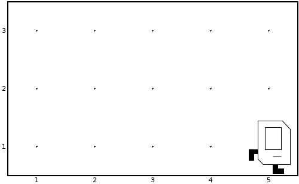Übung: WallKarel
In WallKarel möchten wir Karel dazu bringen, dass er solange gerade aus weiterläuft, bis eine Wand kommt. Dann soll er aber stehen bleiben, Wir sollten darauf achten unser neues Kommando moveToWall() zu verwenden, dann wird der Code nämlich sehr einfach.
.
.
Übung: InfiniteLoopKarel
Die while Schleife ist nicht ganz unproblematisch: denn Karel macht etwas solange, bis etwas bestimmtes passiert. Z.B. in InfiniteLoopKarel soll Karel sich solange nach links drehen, bis keine Wand mehr vor ihm ist:
while ( frontIsClear() ) {
turnLeft();
}
Das funktioniert gut solange Karel irgendwo in der Nähe einer Wand ist. Befindet sich Karel aber in der Mitte seiner Welt, so hört er nicht auf sich zu drehen. Man nennt das dann eine Endlos-Schleife oder Dreh-Wurm-Karel.
.
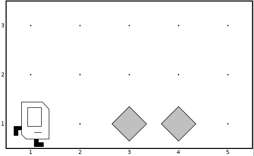Übung: RobinHoodKarel
Karel liebt Kino. Neulich hat er den Film 'Robin Hood' gesehen. Nach dessen Motto 'nimm von den Reichen und gib es den Armen', läuft Karel so durch seine Welt, und jedes Mal wenn er auf der Straße einen Bonbon findet nimmt er ihn, und wenn kein Bonbon da liegt, legt er einen hin.
Am besten verwenden wir Karel's Sensoren um die Aufgabe zu lösen. Wir können Karel also sagen
if ( beepersPresent() ) {
pickBeeper();
}
if ( noBeepersPresent() ) {
putBeeper();
}
und das Ganze soll er solange machen, bis eine Wand vor ihm ist. Das funktioniert auch ganz gut. Aber wir können den Code etwas verkürzen, wenn wir das else Kommando verwenden. Es bedeutet in etwa anderfalls. In Code sieht das so aus:
if ( beepersPresent() ) {
pickBeeper();
} else {
putBeeper();
}
und bedeutet in etwa: wenn ein Bonbon da ist, dann nimm ihn auf, anderfalls lege einen hin.
.
Top-Down Ansatz
Im Prinzip gibt es zwei Möglichkeiten ein beliebiges Problem zu lösen. Der eine ist der Bottom-Up Ansatz: ausgehend von den Dingen die man kennt versucht man ein Problem zu lösen. Bisher haben wir diesen Ansatz für die Lösung unserer Karel Probleme verwendet: mit den Paar Kommandos die Karel kennt und seinen Sensoren, haben wir einfache Problem einfach Schritt für Schritt gelöst. Für einfache Probleme funktioniert das auch ganz gut.
Für komplexere Problem funktioniert das nicht mehr so gut. Hier hat sich die Top-Down Methode bewährt. In der Top-Down Methode hat man meist ein Problem vor sich, bei dem man zunächst denkt, dass es unmöglich zu lösen ist. Allerdings, gelingt es einem sehr häufig das komplexe Problem in kleinere Teilprobleme zu zerlegen. Manchmal sind diese dann schon lösbar, manchmal muss man aber auch diese noch mal in noch kleinere Teilprojekte zerlegen. Man nennt diesen Prozess 'stepwise refinement'. Am besten betrachten wir das Beispiel des WindowCleaningKarel um zu sehen wie das funktioniert.
.
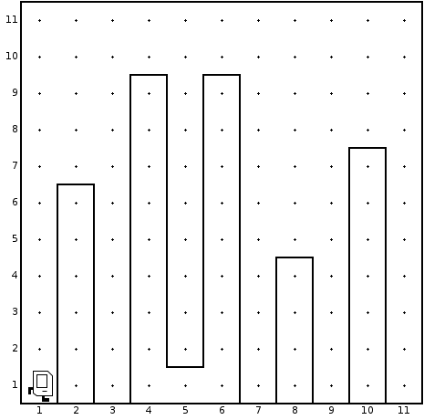Übung: WindowCleaningKarel
Karel lebt in Chicago. Und seinen Lebensunterhalt verdient er sich mit Fensterputzen. Der Job ist nicht ganz ungefährlich, aber mit irgendwas muss er ja sein Geld verdienen. Karel muss pro Woche immer fünf Wolkenkratzer putzen. Er sind aber nicht immer dieselben. Manchmal sind sie höher manchmal niedriger. Eigentlich mag Karel die hohen lieber, sind aber mehr Arbeit.
Wir wollen das Problem mit dem Top-Down Ansatz lösen. Es geht also darum das Gesamtproblem in kleinere zu zerlegen. Nehmen wir an wir wüssten wie Karel einen Wolkenkratzer putzt, also angenommen wir hätten eine Methode namens cleanOneSkyScraper(). Dann wäre die Lösung unseres Problems ganz einfach, wir würden einfach fünfmal cleanOneSkyScraper() ausführen:
for (int i = 0; i < 5; i++) {
cleanOneSkyScraper();
}
Wir haben also unser grosses Problem gelöst.
Jetzt müssen wir das etwas kleinere Problem cleanOneSkyScraper() lösen. Wie putzt denn Karel einen Wolkenkratzer? Noch ist das Problem zu kompliziert um es mit move's und turnLeft's zu lösen, also sollten wir es noch einmal zerlegen. Wenn wir wüssten wie Karel am Wolkenkratzer hochläuft, moveUpAndClean(), über den Wolkenkratzer läuft, moveOver(), und an der anderen Seite den Wolkenkratzer wieder hinunterläuft, moveDownAndClean(), dann hätten wir das Problem cleanOneSkyScraper() gelöst:
public void cleanOneSkyScraper() {
moveUpAndClean();
moveOver();
moveDownAndClean();
}
Obwohl wir noch nicht ganz fertig sind, sehen wir, dass wir jetzt schon fast am Ziel sind. Die letzten drei Kommandos können wir ganz einfach lösen. Für moveUpAndClean() lassen wir Karel sich nach links drehen, dann lassen wir ihn solange laufen, solange die rechte Seite von Karel blockiert ist. Für moveOver() lassen wir Karel sich nach rechts drehen, zwei Schritte nach vorne machen und sich dann noch einmal nach rechts drehen. moveDownAndClean() ist eigentlich wie moveToWall() nur am Ende muss er sich noch einmal nach links drehen.
.
Empfehlungen für den Top-Down Ansatz
Manchmal ist es z.B. nicht ganz klar wann man mit dem Top-Down Ansatz fertig ist. Hier gibt es ein paar Empfehlungen, die einem da weiterhelfen:
- eine Methode sollte genau ein Problem lösen
- eine Methode sollte nicht mehr als 15 Zeilen lang sein, um die fünf Zeilen sind ideal
- Methoden Namen sollten beschreiben was die Methode macht
.
Kommentare
Jedes gute Programm hat Kommentare. Je wichtiger es ist, desto mehr Kommentare hat es. Was sind Kommentare? Kommentare sind Beschreibungen was das Programm, was der Code macht. Sie sind für Menschen gedacht, die versuchen das Programm zu verstehen. Der Computer ignoriert die Kommentare.
Der Syntax ist eigentlich ganz einfach: ein Kommentar beginnt mit den Zeichen '/**' und endet mit den Zeichen '*/'. Normalerweise befindet sich ein Kommentar ganz am Anfang eines Programms und erklärt was das Program als ganzes macht. Zusätzlich sollte man noch bei jeder Methode kurz beschreiben was diese macht. Will man es ganz gut machen, dann beschreibt man auch noch kurz von welchen Annahmen man ausgeht wenn die Methode aufgerufen wird (pre-conditions) und welchem Zustand man die Welt hinterlässt nachdem die Methode fertig ist (post-conditions).
/**
* Karel's day job is to clean windows of skyscrapers in Chicago.
*
* @author Ralph P. Lano
*/
public class WindowCleaningKarel extends Karel {
/**
* Karel has to clean five skyscrapers, one at a time.
*
* PreCondition: Karel is standing in front of the first skyscraper, facing
* east
* PostCondition: Karel is standing behind the last skyscraper, facing east
*/
public void run() {
for (int i = 0; i < 5; i++) {
cleanOneSkyScraper();
}
}
...
}
Hält man die Methoden kurz, so erübrigen sich Kommentare innerhalb von Methoden. Auch hier geht es wieder darum, dass sich Programme wie gutes Englisch lesen sollen.
.
Übung: Kommentare
Als kleine Übung wollen wir das WindowCleaningKarel Programm ausführlich mit Kommentaren versehen. Für alle zukünftigen Programme die wir schreiben sollten wir uns angewöhnen jedes Programm und jede Methode mit einem kleinen Kommentar zu versehen. Das macht die Programme besser verständlich (für Menschen).
.
SuperKarel
Bevor wir uns den Projekten widmen, sollten wir noch erwähnen, dass Karel einen großen Bruder namens SuperKarel hat. SuperKarel kann alles was Karel kann, aber als großer Bruder kann er natürlich auch turnRight() und turnAround(). Ansonsten sehen die beiden wie Zwillingsbrüder aus. Wenn wir mit Karel's Bruder arbeiten wollen, dann sagen wir einfach 'extends SuperKarel' anstelle von 'extends Karel' am Anfang unserer Programme.
.
Review
In diesem Kapitel haben wir unsere ersten Programmierschritte unternommen, indem wir Karel bei der Lösung seiner kleinen Problemchen geholfen haben. Ausserdem haben wir
- Karel neue Kommandos, auch Methoden genannt, beigebracht, z.B. moveToWall()
- Karel mittels der for Schleife Sachen wiederholen lassen, z.B. mache drei Schritte vorwärts
- gesehen dass Karel Sensoren hat und dabei die if Anweisung kennengelernt, z.B. if ( beepersPresent() )
- die while Schleife ausprobiert, z.B. while ( frontIsClear() )
- Bekanntschaft mit unseren ersten Software Engineering Prinzipien gemacht, z.B. Code sollte sich wie normales Englisch lesen lassen
- unsere ersten Fehler beim Programmieren gemacht, z.B. den OBOB und die Endlosschleife (infinite loop)
- angefangen unseren Code mit /** ... */ zu kommentieren
Das wichtigste aber was wir in diesem Kaptiel gelernt haben war der Top-Down Ansatz. Dabei geht es darum ein großes Problem in kleinere zu zerlegen, und dies unter Umständen so lange zu wiederholen, bis jedes Teilproblem einfach zu lösen ist. Dieser Ansatz läst sich nicht nur bei Programmierproblemen anwenden, sondern auch bei der Lösung von Problemen in allen möglichen anderen Feldern.
.
Projekte
Wir wissen jetzt eigentlich genug über Karel um ihm beim Lösen aller möglicher Probleme zu helfen. In dem Buch von Pavel Solin [4] gibt es noch viel mehr Karel Beispiele.
.
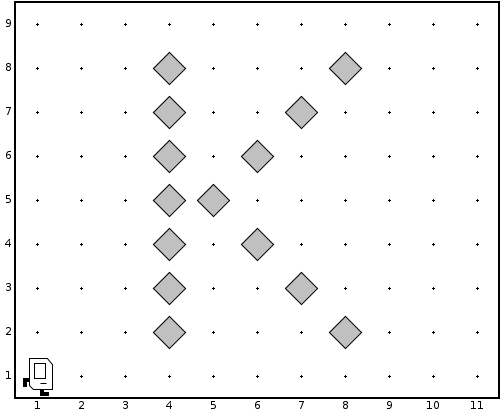WritingKarel
Karel hat in der Schule schreiben gelernt. Sein Lieblingbuchstabe ist das 'K'. Wir wollen also mit Hilfe des Top-Down Ansatzes Karel helfen seinen Lieblingbuchstaben zu schreiben.
.
.
.
.
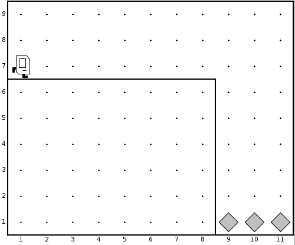AdventureKarel
Karel ist kein Angsthase, ganz im Gegenteil, er liebt Abenteuer. Aber das kann manchmal ganz gefährlich werden. Neulich war er an den Kreidefelsen von Dover (White Cliffs of Dover). Natürlich will er so nah ran wie möglich. Aber runterfallen will er natürlich auch nicht (Karel kann nämlich nicht schwimmen). Was das Problem schwer macht ist, dass wir nicht wissen wie weit die Klippen entfernt sind.
.
.
.
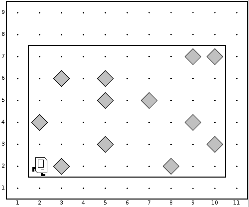PartyKarel
Karel lebt in einer WG mit seinem Bruder SuperKarel. Beide lieben Parties und nach der letzten sieht es in ihrer Wohnung aus wie Kraut und Rüben. Heute abend kommen Karel's Eltern zu Besuch, deswegen muss er aufräumen. Helfen wir Karel dabei seine Wohnung wieder in Ordnung zu bringen indem wir alle herumfliegenden Beepers aufräumen.
Der Teil der das Programm etwas kompliziert macht ist dafür zu sorgen, dass Karel auch aufhört wenn er fertig ist.
.
.
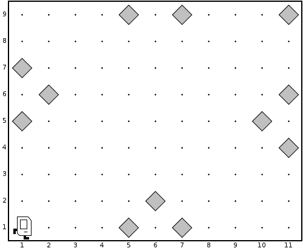EasterEggKarel
Karel liebt Ostern, da darf er immer Ostereier suchen. Die haben seine Eltern im ganzen Garten versteckt, helfen wir Karel alle Ostereier einzusammeln. Da er später dann auch bei seinen Großeltern vorbeischaut, und deren Garten viel größer ist, muss das Programm auch für Gärten unterschiedlicher Größe funktionieren.
Der Teil der das Programm etwas kompliziert macht ist dafür zu sorgen, dass Karel auch aufhört wenn er fertig ist.
.
.
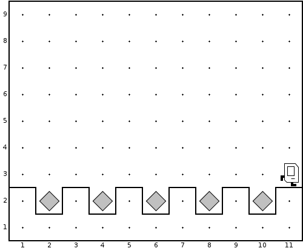TulipKarel
Karel hat holländische Vorfahren, deswegen liebt er Tulpen. Und jeden Winter pflanzt er wieder Tulpenzwiebeln, damit sein Garten im Frühling wieder voller Tulpen ist. Helfen wir Karel beim Tulpenpflanzen, aber mit dem Top-Down Ansatz. Da Karel auch bei seinen Eltern und Großeltern Tulpen pflanzt, muss unser Programm wieder für alle möglichen Gärten funktionieren.
.
.
.
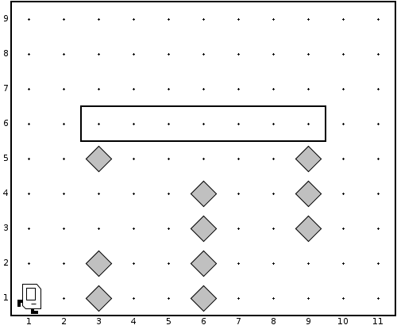BuilderKarel
In Chicago gibt's ab und zu Tornados. Der letzte hat Karel's Haus erwischt. Es steht zwar noch aber die Stützpfeiler haben ordentlich was abbekommen und müssen repariert werden. In Karel's Haus gibt es drei Stützpfeiler, die natürlich aus Beepern gemacht sind. Die drei Stützpfeiler sind drei Schritte auseinander, könnten aber unterschiedlich hoch sein. Helfen wir Karel dabei sein Haus wieder zu reparieren, natürlich mit dem Top-Down Ansatz.
.
.
.
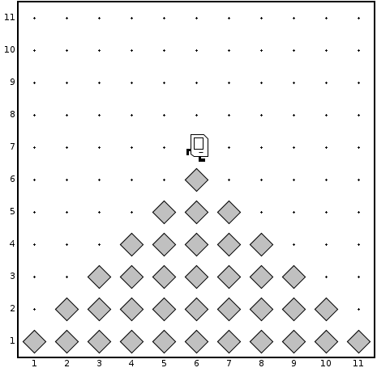PyramidKarel
Wir haben ja schon gehört, dass Karel ein kleiner Abenteurer ist. Neulich hat er im Fernsehen einen Bericht über die Pyramiden gesehen, und da muss er natürlich sofort eine in seinem Garten nachbauen. Da er mehrere bauen will, von unterschiedlicher Größe, sollte unser Programm sollte unser Programm auch in Welten mit anderen Größen funktionieren, deswegen macht es wieder Sinn den Top-Down Ansatz zu verwenden.
.
.
.
.
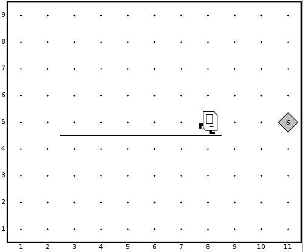YardstickKarel
Karel ist nicht ganz so dumm wie er ausschaut. Er kann nämlich zählen, obwohl er keine Finger (und Variablen) hat. Karel zählt mit Beepers. In dem Beispiel soll er messen wie lange die Wegstrecke ist vor der er steht. Er soll je nach Länge der Strecke genausoviele Beepers am Ende hinlegen.
Wir können davon ausgehen, dass Karel am Anfang genau vor der Wegstrecke steht.
.
.
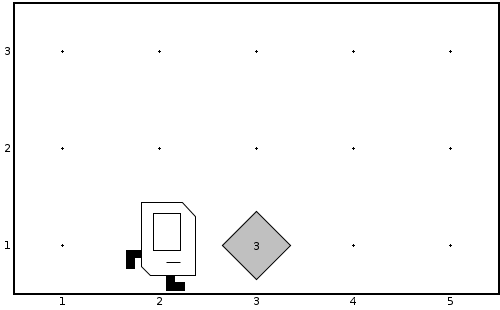DoubleBeeperKarel
Karel kann auch rechnen. In dem Beispiel DoubleBeeperKarel soll er die Anzahl der Beepers die auf dem Haufen vor ihm liegen verdoppeln. Danach soll Karel wieder vor dem Haufen stehen. Ganz wichtig: Karel kennt keine Variablen, und obwohl er zählen kann (siehe letztes Beispiel) hilft das nicht wirklich. Ausserdem soll das Program für eine beliebige Anzahl von Beepers funktionieren.
Dieses Problem lässt sich am einfachsten mit dem Top-Down Ansatz lösen. Wie wäre es denn wenn man aus einem Beeper zwei machen könnte? Und das macht man solange bis keine Beepers mehr da sind.
Frage: Wie müsste der Code aussehen, wenn Karel die Zahl der Beepers verdreifachen oder halbieren soll?
Karel kann also jede der Grundrechenarten, und damit kann er eigentlich alles ausrechnen was man so ausrechnen kann, man sagt auch Karel ist eine Universal Computing Machine.
.
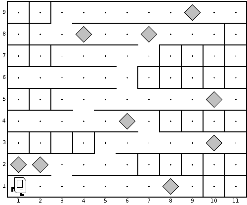DonkeyKongKarel
In seiner Freizeit zockt Karel gern. Am liebsten die klassischen Arcadenspiele der 80er. Bei diesen Spielen geht es immer darum soviele Schätze (Beepers) wie möglich einzusammeln und von einem Level zum nächsten zu gelangen. Der Ausgang in diesem Level befindet sich oben rechts und wir dürfen davon ausgehen, dass ein Level aus zehn Stockwerken besteht.
Natürlich verwenden wir wieder den Top-Down Ansatz.
.
.
Fragen
-
Nennen Sie die vier wichtigsten Kommandos von Karel.
-
Geben Sie ein Beispiel für ein Off By One Bug (OBOB).
-
In der Übung “PartyKarel” haben Sie Karel das Aufräumen beigebracht. Erklären Sie kurz, wie Karel das Beeper-Chaos wieder bereinigt. (Kein Code nötig, skizzieren Sie lediglich in Worten Ihre Vorgehensweise)
-
Wie 3) nur mit PyramidKarel, DoubleBeepersKarel, WindowCleaningKarel,...
-
In der Vorlesung haben wir Empfehlungen für den Top-Down Ansatz kennengelernt. Diese geben Regeln bzgl. der Namen von Methoden, wie viele Zeilen Code eine Methoden haben sollte, etc. Nennen Sie zwei dieser Richtlinien.
-
Wofür sind Kommentare gut?
-
SuperKarel unterscheidet sich von Karel durch zwei zusätzliche Kommandos. Welche sind das?
-
Was ist der Unterschied zwischen Bottom-Up Design und Top-Down Design. Welcher ist zu bevorzugen?
-
Karel hat den Film 'Robin Hood' angesehen und war total von dem Helden beeindruckt. Deswegen will er seinem Beispiel “nimm von den Reichen und gib es den Armen” folgen. Sie sollen also ein Karel Program schreiben in dem Karel einen Beeper aufnimmt, wenn er einen findet, und einen hinlegt, wenn keiner da ist. Um das Problem zu lösen, dürfen Sie folgende Annahmen über die Welt machen:
• Die Welt ist mindestens 3x3 groß.
• Beim Start, steht Karel an der Ecke 1st Street und 1st Avenue, schaut nach Osten (East) und hat unendlich viele Beeper in seiner Bonbontüte.
Achten Sie darauf, dass Sie nur Karel Kommandos verwenden.
.
Referenzen
Die Idee hinter Karel stammt von Rich Pattis einem ehemaligen Studenten der Stanford Universität [1]. Der Name 'Karel' ist inspiriert vom Vornamen des tschechischen Schriftstellers Karel Capek in dessen Schauspiel R.U.R. (Rossums Universal-Robots) erstmals das Wort 'Roboter' auftaucht [2]. Mehr Details zu Karel mit vielen Beispielen findet man im Karel Reader [3]. Viele der Beispiele die hier verwendet wurden, stammen zum einen von Karel Reader [3] und zum anderen der Stanford Vorlesung 'Programming Methodologies' [4]. Viele weitere schöne Karel Beispiele gibt es in dem Buch von Pavel Solin [5].
[1] Karel the Robot: A Gentle Introduction to the Art of Programming by R.E. Pattis
[2] Seite „Karel Čapek“. In: Wikipedia, Die freie Enzyklopädie. URL: https://de.wikipedia.org/w/index.php?title=Karel_%C4%8Capek&oldid=148374315
[3] KAREL THE ROBOT LEARNS JAVA, von Eric Roberts
[4] CS106A - Programming Methodology - Stanford University, https://see.stanford.edu/Course/CS106A
[5] Learn How to Think with Karel the Robot, von Pavel Solin, http://femhub.com/pavel/work/textbook-1.pdf
.